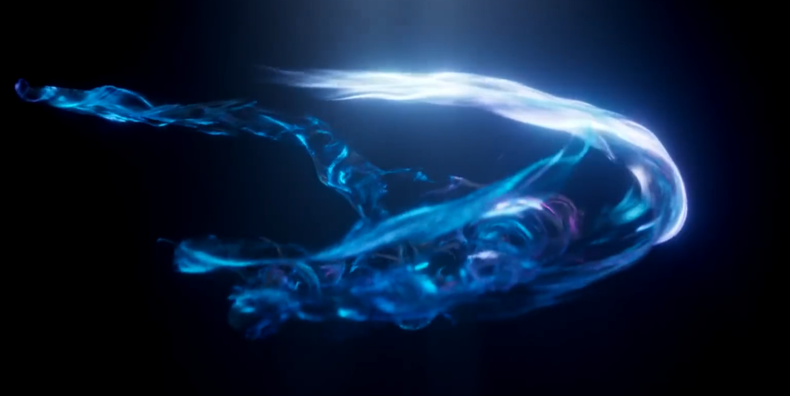
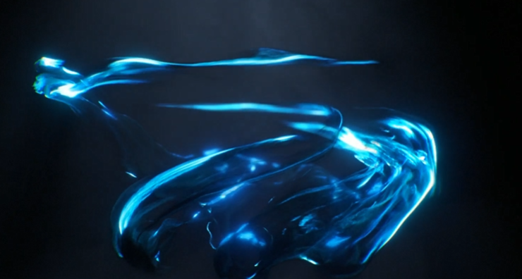
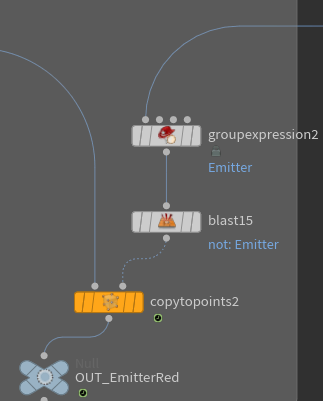
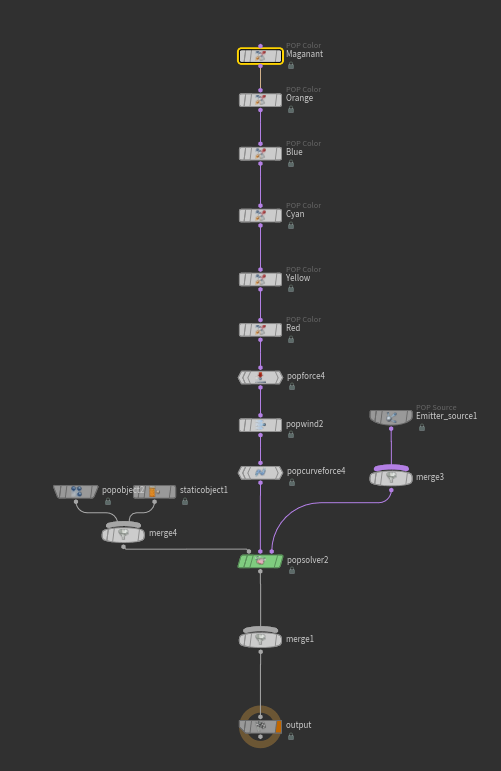
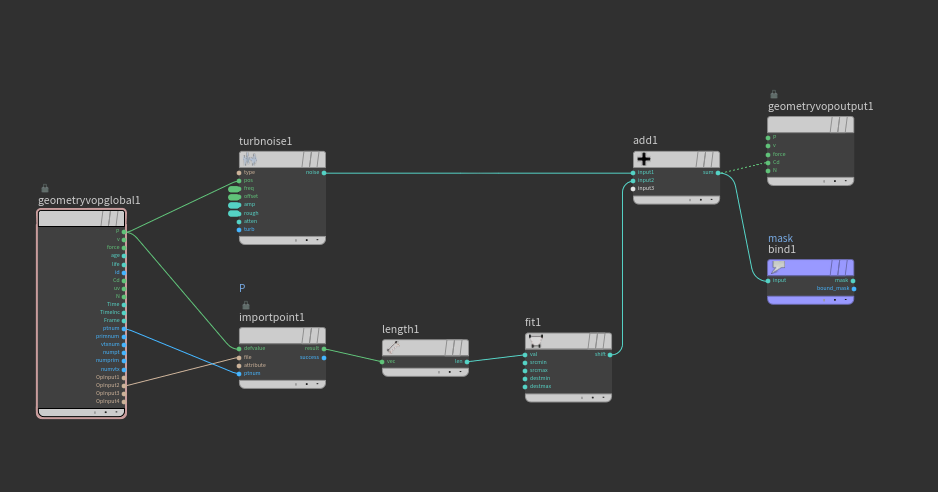

第 4 週
團隊成員
Yiqi Zheng（特效）
Riley Ho（特效）
Itim Kongsakulvatanasook（特效）
Sofia Mancias（合成）
1 月 31 日
Benji Hopkins（外觀開發）
SCAD × HARBOR × ETC － 第 4 週
大家好，這是我 SCAD × Harbor × ETC 部落格的第四週！
以下是週二簡報後導師們的回饋。
Kyle：
-
鏡頭 1：
-
偏暗的打光方向效果很好。
-
需要在外觀開發上多花點時間。
-
自發光應該更多來自環境，而不是物體本身。
-
-
鏡頭 4：
- 持續調整燈光，讓鏡頭像參考圖一樣有更強的縱深感。
Beck：
-
鏡頭 3 和 5：
-
鏡頭 3 的粒子不夠清楚。
-
轉到鏡頭 5 的過渡要更有意圖，清楚地從乾燥過渡到流體。
-
-
鏡頭 6：
-
可以考慮增加更多飛舞的元素，讓畫面更有看頭。
-
待辦事項：
-
調整粒子的路徑與流動形狀（加入 noise）
-
優化粒子的材質
經過小組討論，我們決定在六種顏色旋繞在一起時，從流體改成粒子，以獲得更好的效果與更強的視覺美感。以下是我會使用的參考。


我總共嘗試了三種方法來實現，其中一種是照著教學做的。
第一種方法是 Dopnet + POPCurveForce，至少對我來說效果最好。

根據前幾週的成果，我找到一種更程序化的方式來定義發射器並連接兩條曲線。我先做了一條螺旋線，再畫第二條曲線作為從畫面外進來的引導線。之前的方法是用 Fuse 節點連接兩條曲線，但每次調整螺旋參數（例如圈數或高度），我都得手動移動引導線，讓 Fuse 能找到最近的點，既沒效率又麻煩。
現在的設定改用 Add 節點，能自動連接曲線，不需要手動調整位置。


另一個問題如前面提到的：每次修改螺旋參數或移動手繪曲線時，我也得手動移動發射器，讓它保持在曲線起點。為了解決這點，我現在用 curveu 屬性找到曲線的起點（point 0），選取該點，再用 Copy to Points 產生發射器。這樣不論曲線怎麼修改或移動，發射器都會自動跟著曲線走。



這是我在 DOP Net 中的設定。
我也嘗試用速度屬性同時控制亮度與拖尾長度，速度越快，拖尾越亮越長。（目前還沒成功）


材質方面，我讀取 SOP 層的 Cd 屬性、開啟透射，並用幾何體上不同的灰階值控制不透明度。
第二種方法是用 POP Net 和 POP Wrangle（來自 Fowler 教授），讓粒子沿著曲線移動：用 pcopen 取樣每個粒子周圍的相鄰點，用 pcfilter 平均曲線的切線，再把粒子速度設為沿著正規化後的切線方向（乘上速度參數）。不過我還不確定接下來要怎麼加入可控制的 noise，包括流體內部和邊緣。這是我得到的結果。

第三種方法，我找到兩個教學：一個用 Path Deform 讓垂直線沿著引導曲線變形，另一個著重在表面上製造 noise 或擾動。我把這兩種做法結合起來，這是得到的結果。（我不太喜歡這裡做出的形狀）這個方法的好處是可以套用到任何曲線上。


我嘗試用原始點位置計算以距離為基礎的遮罩，讓擾動依照遮罩來套用。
我先建立幾條垂直線，再用一個方塊定義區域、把裡面的幾何體編成群組並刪除。這裡用 attributevop 來擾動線條。（我請 ChatGPT 協助建立基本邏輯與結構。）

這個設定用 curl noise 來偏移點的位置。
P_new = P + (noise * mask)
下一步是產生遮罩，有選擇地停用某些段落。
接著，我用 POP network 產生粒子並加上 noise。


我請 ChatGPT 幫我理解並撰寫一個 wrangle，透過參數控制粒子的停用。
接著用 Path Deform 讓幾何體沿著曲線走，並用關鍵影格確保動畫對齊。


這裡我用 Split 節點分離不同層，讓流動有更多變化。我覺得這個方法可以和第一種方法整合，產生更多變體。

所以我決定採用第一種方法，並嘗試用其他教學學到的技巧做出更多變體。
-
調整路徑（為粒子增加變體）
-
改善粒子的材質